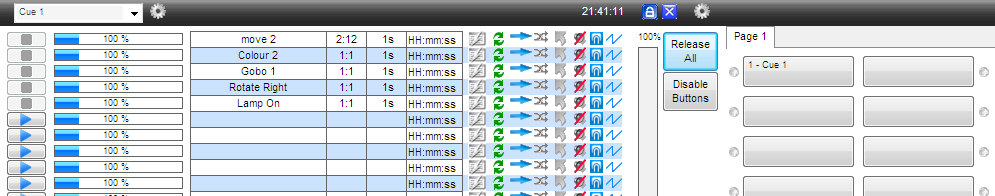

Using Cues and Submasters
Fig 1 – submasters window
The Submasters (Lets call them sm's) in FS can be one of the best ways to control your lighting and allow total flexibility in mixing and matching your sequences. The sm page comprises of 4 tabs of 5 sm's, a total of 20 sm's. Each sm can hold 20 sequences. Every sm has 5 controls. Run, Stop, Back, Go and an Intensity slider.
To understand best how to use them we must first look at some more basic control.
Lets begin with looking at using the fixture. In this case we will use 4 x 6 channel scanner. An Abstract VRX Scan or an equivalent fixture or you choice. Select the fixtures from the FS menu – Setup > Add/Remove Fixtures.
Fig 1.1 Add/ Remove Fixtures
Fig 2 – FS desktop
Also open magic 3D and make a quick stage.
Fig 3 – Magic 3D view
I have chosen a 6 channel fixture as each SM page has 5 sm's, pan & tilt will go on 1 sm. This will make more sense later. Its attributes are….
Chan 1 - Pan
Chan 2 - Tilt
Chan 3 - Colour (10 colours inc white
Chan 4 - Gobo (8 gobo inc open)
Chan 5 - Gobo Rotate
Chan 6 - Shutter / Intensity
Now we need to build up a bunch of sequences to suit the fixture. This is the time consuming part but if you start this way then adding in new effects to your shows is quick and easy.
Each sequence that is to be made will only control 1 attribute of the fixture with the exception of pan and tilt which will be programmed together.
So to start select all 4 scans. Then open all the fixture attributes 'Show All Panels'. (Window > All) Now select 'Open' on the Lamp. Then open the 'Create Sequence' window.
Fig 4 – Lamp Window
Fig 5 – Create Sequence Window
In the movement window select 'circle' and then click the off button to on and change the pan and tilt from off (show in red) to Fade (which will appear in green). Note that all the other attributes show as 'Off' – This is important as we want to make sure that they are all off so that no information is recorded for them. If any are showing as 'fade' (in green) or 'snap' (in yellow), change it to 'off' now.
Fig 6 – Movement Window
I should point out that its possible to have any attribute of the fixture running in 'create sequence'. So it could be that the beam is on, colour is red and a gobo is on and rotating but only that attribute(s) that are recorded to a scene are the set to 'fade' or 'snap'. Sorry to go on about this bit but its very important that you understand this bit about programming. Always look and check.
TIP! - 'Fade' means the dmx values will fade smoothly between steps in a sequence and 'snap' means there is an instant jump in the dmx value between steps.
Moving on. You have now set the 4 scans up doing a nice circle movement. Now save this a call it 'Move 1'. In the option when saving it has 2 tick boxes, one says 'add to cue and the other 'add to buttons', Tick 'add to cue' Now we need to create 1 or 2 different movement sequences. I'll let you do these for yourself. Remember to save each one with a suitable name (move 2, move 3 etc.) and tick the ' add to cue'.
Fig 7 – Save Window
Once you have a few sequences saved, close the create sequence window and open up the 'cue' window.
Fig 8 – Cue Window
Notice that your movement chases are now displayed here. If they are not then you did not tick the 'add to cue' box when saving. Its not a problem though. Click on the cog at the top on the left, select 'insert sequence' then look for the sequence you want to add, click, hold and drag it to the cue window.
Ok so all the sequences are listed. We now need to save this cue. Click on the cog (top left) and select 'save cue'. Lets call it 'Movements'. Now that's done click on that cog again and 'clear list' and close the cue window.
Now you are on your own for a bit. You need to make a few sequences each for colour, gobo, and gobo rotate, these can be whatever you want. Also you need to make 1 for the shutter / intensity, just make a single step sequence with the lamp on. Do each attribute, one at a time and load them into the cue window, saving each cue with an appropriate name.
Hopefully by now you have 5 cues saved. Movement, Colours, Gobos, Rotate and Shutter.
Now open the submaster window. The cue window will open as well but just close that for now. Click 'open cue' (top right) and a window that look a lot like the save sequence window should open. You will now see your saved cues listed. Find the 'movements' cue, click, hold and drag it over to the submaster window and drop it on the first empty one. You have just made your first submaster control. Now repeat this for the other 4 cues. It should like something like this…
Fig 9 - SM Setup
If you have something like this then well done. If not go back over what you have done and see if you can work out where you went wrong!
In an ideal world you are now ready to run a show using just submasters.
OK. We are nearly there, we just need to look at navigation. This dead simple. You can use your mouse and click on the sequence you want to run. On the first click a blue banner will appear around the selected sequence. The sequence will not run yet though! A second mouse click is needed to activate the sm. No you will see the selected sequence with a blue banner and the sm will have a lighter blue background. This is now activated and running. You can use the sm buttons as well. RUN will activate the sm and GO and BACK will navigate up and down the sm. STOP will stop the sequence in the sm running and the lighter blue background will turn back to white. If you still cant see anything happening then you need to use the sequence called 'lamp on' then you will have a beam to look at. But wait! Its still not showing anything ?? On the right of each sm is a slider. This is the sm intensity. For the most part you wont need it but any attribute like the 'lamp' that is set to use intensity will need this to be on. It works like a dimmer so the higher it is the brighter the beam. To use it place the mouse cursor over it and hold the left mouse button. Now you can drag the intensity up and down. You will notice that it turns blue.
 Fig 10 – Submaster Intensity
Fig 10 – Submaster Intensity
Just to be sure, turn up the intensity for every sm. You should now be able to see the results of your work! Now you can play with the different sequences you created in a 'mix and match' way. Have a go you should get the idea.
Now, if you haven't already, open both the sm and the cue widow together. You will notice that every sequence that you select in the sm will appear on the cue window. Sm 1 will appear on line 1 of the cue, sm 2 will appear on line 2 of the cue and so on. There are some more control points in the cue window for each sequence. Speed control, this will change the speed that FS runs through the steps in your sequence. This operates in the same way as the sm intensity. You can option on sound control, direction of chase, looping, manual triggering etc. from here too. Experiment with these tools to familiarize yourself with them.
So now you have played around with the sm's and cue controls and you have a cue running that you really like. Its possible to save this as one cue-button. This will recall all the sequences and speed control etc. you have set in one button press.
Firstly make sure the 'cue buttons' are visible. Click on the cog, top left, and select 'cuelist buttons visible'. Now click the cog again a select 'save cue'. When the save box appears give the cue a suitable name and tick the box ' Add to current cuelist tab'. Then you will see this appear in as a button on the right. Make some changes to the cue and save this. Now you can quickly switch between cues.
To what parameters that will be restored vhen a sequence is loaded, See:Sub Master - Sequence parameters
 Fig 11 – Cuelist buttons
Just a few points that I need to make you aware of. Firstly when running a cue from cuelist buttons you can still use submaster control as well. For example you could override the colour or gobo or any fixture attribute. Be careful though as this can get confusing. Also if you open FS and go straight to the cue buttons you have setup, you will need to turn up all the sm intensities or they wont work!. Also remember that your lighting will blackout if you hit the same cuelist button again. This will happen even if you have overridden all the sequences playing from the cuelist button with submasters. Play around with this to get the idea.
Another point which has come up to do with submasters is when hitting 'stop' some people want the fixture to blackout. So if you have a submaster for lamp / shutter control when you hit stop the shutter will close and a blackout state is archived. This is possible but does bring in a few other problems. If you want this feature then here is how….
1> Go to Setup –> FreeStyler Setup –> Preferences –> Extra Options 2> Tick 'Cue Go to previous value always enabled' 3> Before you start any sequences in the cue window, make sure the fixture does not send out a beam, (values at 0).
Fig 12 - FS Extra Options
You can, if you like, set you fixture(s) to do something fancy instead. So on step 3 instead of values at 0 you can set them where you like then when you stop a sm it will do whatever you set. This stops working correctly if you are also using 'cuelist buttons'. My personal opinion on this is don't use it. It could confuse you. Far better would be to add in a sequence to the relevant sm to close the shutter and cause blackout that way.
Once you have mastered submasters your light shows will really come to life. Adding new colour sequences will become a breeze! New movements created and add into cues in no time. In time you should have built up a great collection sequences that can be easily adapted for different venues and show types. This is how the pros do it on big desks !!